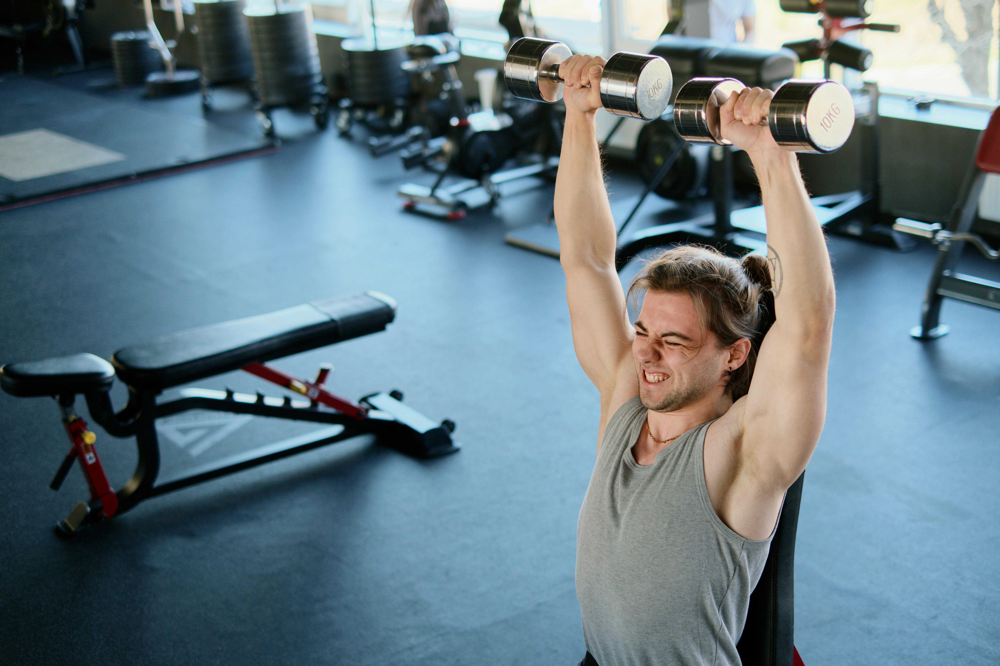
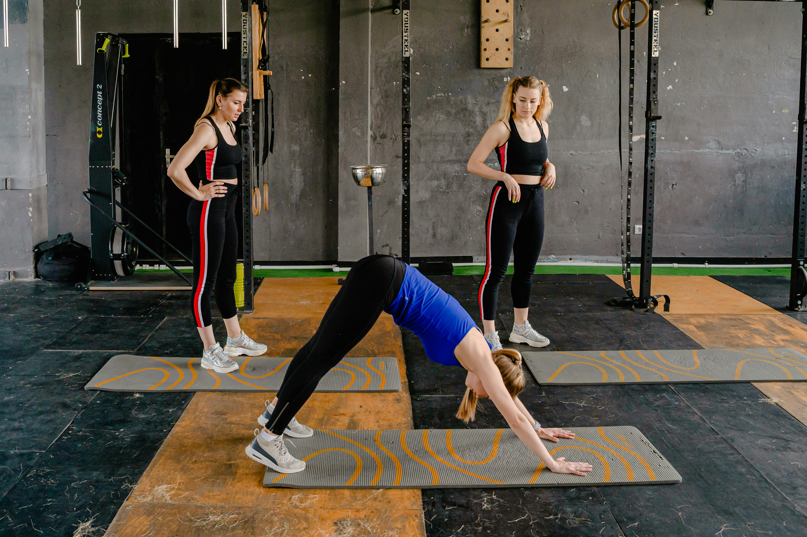
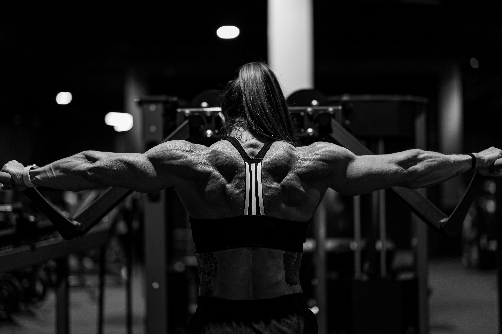

-Start each session by warming up with a few minutes of cardio on the crosstrainer or treadmill.
-Rest about one minute between each set.

1. Bench press - 4 sets x 8-10 repetitions.
2. Chins (or Lat pulldowns) - 3 sets x 10-12 repetitions.
3. Dumbbell row - 3 sets x 10-12 repetitions.
4. Dumbbell press - 3 sets x 12-15 repetitions.
5. Face Pulls - 3 sets x 12-15 repetitions.
1. Squats - 4 sets x 8-10 repetitions.
2. Deadlift - 4 sets x 8-10 repetitions.
3. Lunges - 3 sets x 12-15 repetitions per leg
4. Lying leg press on machine - 3 sets x 12-15 repetitions.
5. Russian Twists - 3 sets x 15-20 repetitions.

1. Clean and Press with barbell or dumbbells - 4 sets x 8-10 repetitions.
2. Pull-ups - 3 sets x max reps (or Assisted pull-ups).
3. Dips - 3 sets x 12-15 repetitions.
4. Front Squats - 3 sets x 10-12 repetitions.
5. Plank - 3 sets x 30-60 seconds.

1. Bicep Curls - 3 sets x 12-15 repetitions.
2. Tricep Bench Dips - 3 sets x 12-15 reps.
3. Lateral lift with dumbbells - 3 sets x 12-15 repetitions.
4. Arnold Press - 3 sets x 10-12 repetitions.
5. Hammer Curls - 3 sets x 12-15 repetitions.
-Use this program as a foundation and adjust it according to your personal goals, preferences and fitness level.
-It is great to adapt the training program for beginners by starting with lighter weights and fewer repetitions.
-Focus on learning proper technique for the exercises and gradually increase weights and repetitions as you get stronger.
-For those of you who are experienced and have trained a lot, you can adapt the training program to your strength by, for example, increasing the weights and adding more repetitions or sets.
-It is easy to vary the training and by covering different muscle groups during the weekly training sessions, you avoid overload and create a balanced physique with a reduced risk of injury.
-Do you also want inspiration for a home workout for the whole body? Check out our article with an effective workout you can do at home.